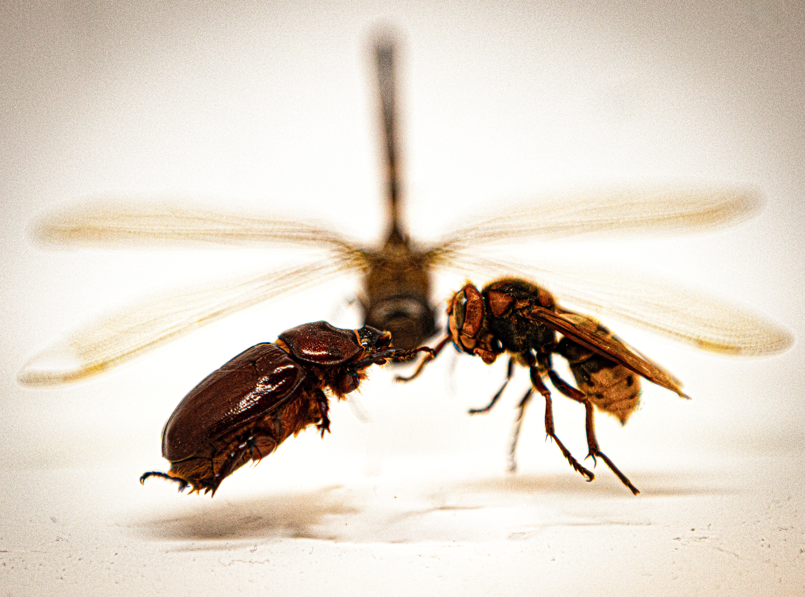
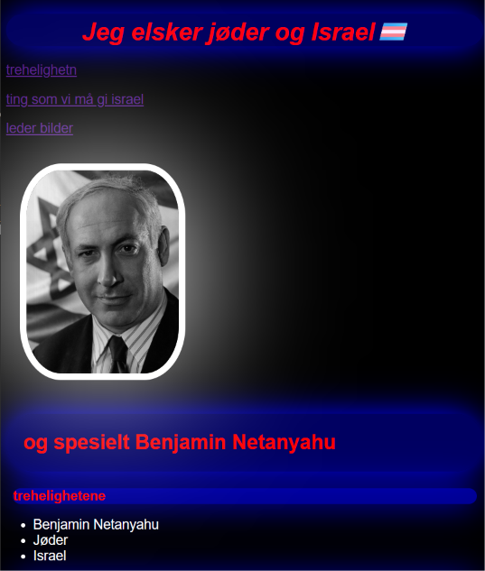
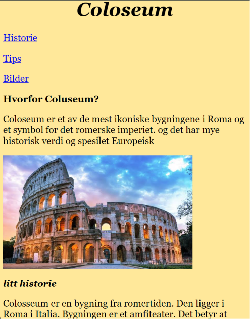

prsojekt 1# medie
Dette var mitt første prosjekt I medie. i dette prosjektet skule vi interviewe en annen elev og lage en informasjons plakat om dem etter på. Dette prosjekte inkulderte både interview teknik og bilde teknik
.png)

prosjekt 2# medie
Dette er mit andre prosjekt i medie. I dette prosjekte så skule vi utforske forskjelige bildesjangere dette bilde var mit favorit. Jeg Hadde lært mye fra det forige prosjektet til dette prosjekt. Spesielt om hvordan man kan redigere bilder og hvordan ta bilder som ser kule ut.
prosjekt 3# medie
Dette er mit nyeste Bilde prosjekt. I dette prosjekte så skulle vi velge vår egen bilde sjanger også skule vi ta 6 bilder innenfor denne sjangeren. Jeg valgte da makro bilde av insekter. dette bilde er det jeg ble mest fornøyd med. Det er fordi jeg fikk kule farger og et gøy senario.


prosjekt 1# IT
Dette er det første prosjekte som vi hadde når vi skulle lære om kodespråkene css og html. Denne Nettsiden er sefølgelig bare tull og full av ironi. den hvar bare en sandkasse som jeg kunne lekke inni. Det er derfor nettsiden ser veldig dårlig ut.
prosjekt 2# IT
Dette er det forige prosjektet som vi jobbet på der skulle vi lage 3 Nettsider. Bilde er tat fra min favoritside av de 3 nettsidene. De 3 Nettsidene skule handle om 3 forskjelig forhånds bestmte ting. Det var, en drømme destinasjon, en Hobby og en anmeldelse av en film man nylig har sett
